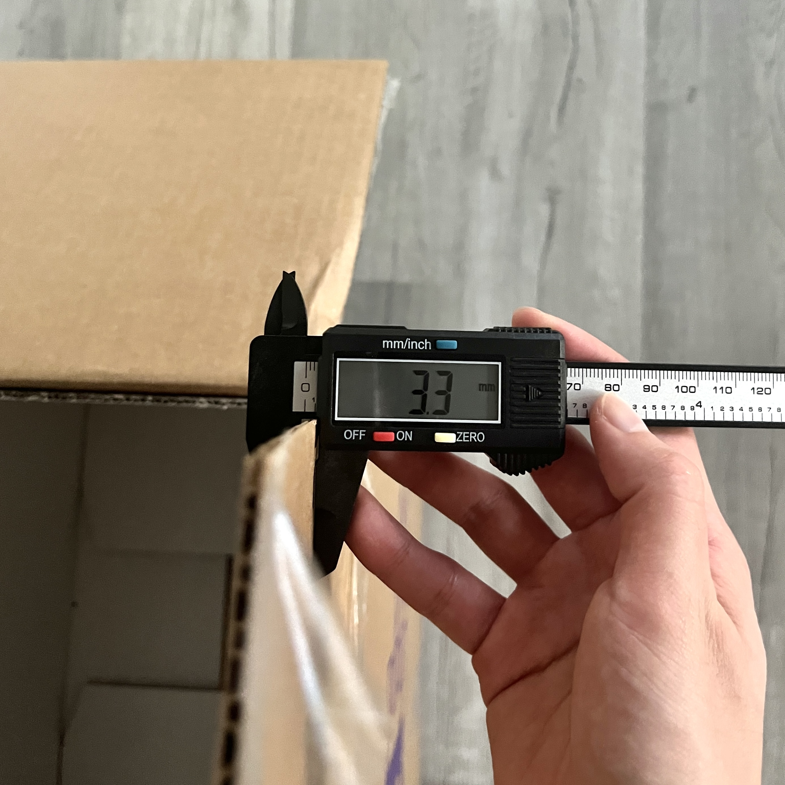
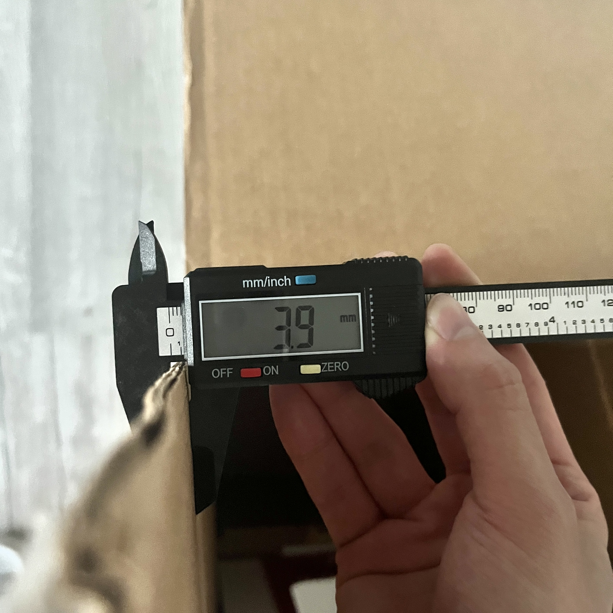
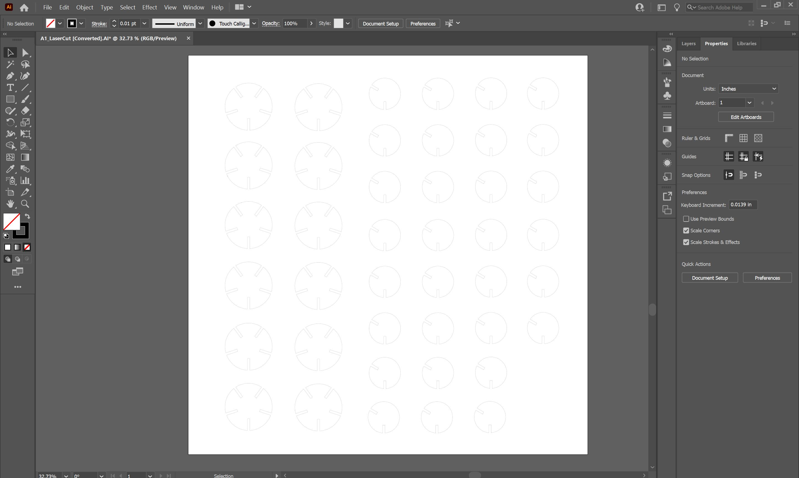
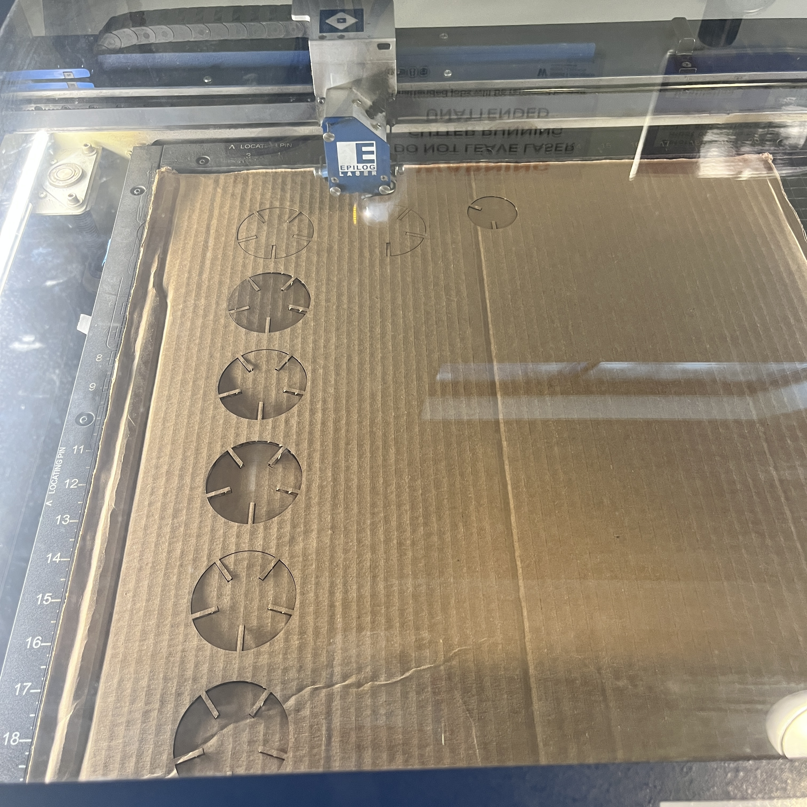
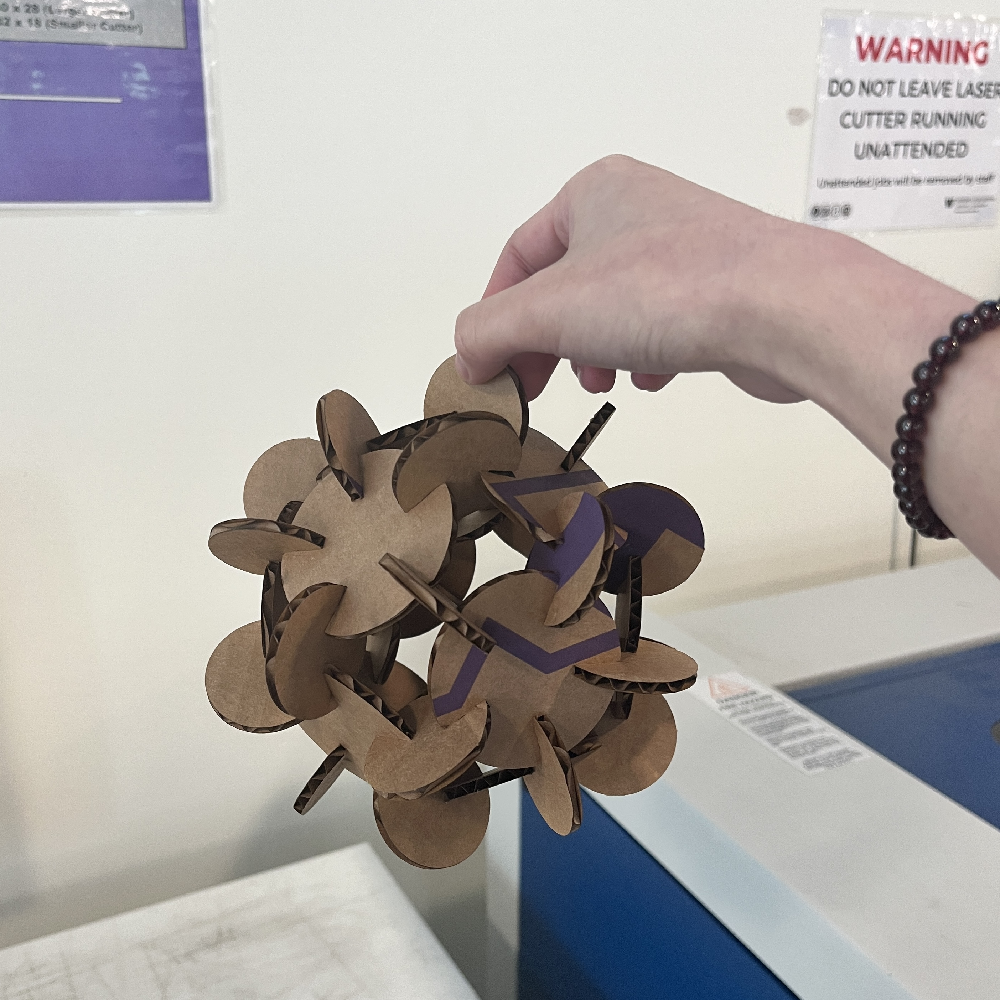

Assignment 3: Getting started with 3D printing
By Sherry Wang
Here is the finished and assembled piece for assignment 1, including 12 large circles and 30 small ones:

I came across this picture while searching on the Internet for some inspirations:

The source file can be found via the watermark or from this link: http://xhslink.com/5iHYqk
Using this picture and my vague memory about polygons, I determined the degrees of gaps of each circle (12 large ones and 30 small ones):

Then I found some cardboards and measured the thickness of them. I realized that different places have slightly different thickness, ranging from 3.3mm to 3.9mm.
 
I also recalled Junchao's reminder that the laser might burn away some material, so I decided to use 3.0mm as the width of my gaps.
Once all data are figured out, I began drawing the shapes in Rhino.
The two shapes are similar, combining a circle and some rectangles together and then trimming down.
I used something I learned from Junchao's demo video, which was command "ArrayPolar". This allowed me to quickly drew symmetrical rectangles spreading equally across the circle.
I also extruded the shapes to get a clearer feeling of the finished pieces.

Before cutting, I exported the curves from Rhino to Adobe Illustrator and duplicated them with the desired amount and size. I also adjusted the stroke thickness, which is why this picture looks a little fuzzy.

On the laser cutter, I used settings: speed 25, power 40, freq 10.
I test cutted a LOT of pieces (there was a malfuction of the machine) and then finished the rest.

And finally for the last step, I assembled everything together and it looked great! I can even lift it up!

Source files:
Rhino file of extruded pieces
Adobe Illustrator file of curves for cutting
Acknowledgements:
Kyle Wang and Kefeng Wang for helping set up the printer and providing help when printing!
Junchao, Nadya and others for support on Discord!